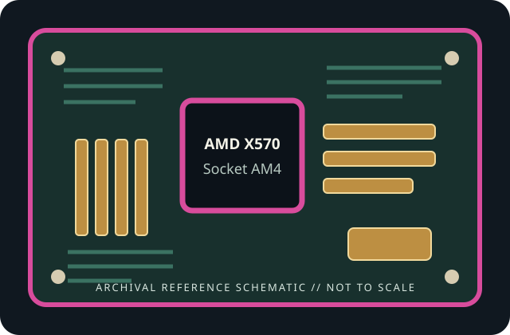

[ INDIVIDUAL COMPONENT // MOTHERBOARDS ]
ASUS ROG Crosshair VIII Impact
AMD X570 Socket AM4 2019 compact enthusiast desktop board. This static record describes this exact model and revision only; confirm the printed PCB identity and use the cited manufacturer's support files.

REVISION / FIRMWARE WARNING: Similar model names, PCB revisions and regional SKUs may differ in connectors, radio hardware and firmware. Identify the exact board printed on the PCB before selecting a BIOS.
Specifications
| Exact model / generation | ASUS ROG Crosshair VIII Impact — 2019 compact enthusiast desktop board |
|---|---|
| Chipset | AMD X570 |
| CPU socket / support | Socket AM4; processor families and minimum BIOS are limited to the exact manufacturer CPU support list. |
| Form factor | Mini-DTX, 203 × 170 mm; verify chassis support because it is longer than Mini-ITX |
| Memory support | Two dual-channel DDR4 DIMM slots; up to 64 GB per ASUS specification. Data rates and ECC mode depend on CPU, BIOS and QVL. |
| PCI Express expansion | One CPU-connected PCIe 4.0 x16 slot; generation and available lanes depend on the installed AM4 CPU. Compact layout and card clearance must be checked against the case. |
| Storage | One onboard M-key M.2 socket plus two additional M.2 sockets on the bundled DIMM.2 expansion module; four SATA 6 Gb/s ports. DIMM.2 is a dedicated module connector, not a memory socket. |
| Rear I/O and network | Rear USB 3.2 Gen 2 Type-C/Type-A and other USB ports, HDMI for supported APU, 2.5GbE RJ-45, Wi-Fi 6 antenna connectors, audio and BIOS FlashBack controls. |
| BIOS / manufacturer support | ASUS UEFI with USB BIOS FlashBack; check the Impact-specific CPU support list, BIOS notes and manual. Do not use the DIMM.2 connector for memory or force ordinary M.2 cards into its module socket. |
Compatibility and installation notes
Mini-DTX dimensions require a case that supports the full board outline and mounting points. Only two DIMMs are available; memory overclocking headroom depends on CPU and kit. Check DIMM.2 card clearance, M.2 thermal pads, PCIe card thickness and CPU/BIOS support before installation.
Before assembly, confirm board revision, chassis dimensions/standoffs, CPU cooler mount and power leads in the manual. Never infer processor compatibility from the physical socket alone. For memory, follow the documented population order and consult the exact board's QVL; EXPO/XMP and other overclocked speeds are not guaranteed.
Read the lane-sharing tables before installing expansion cards and drives. Observe ESD precautions, protect socket contacts, and record the installed BIOS revision and any update history.
Preservation and service
Inspect the socket, DIMM slots, power connectors, M.2 thermal hardware and capacitors before use. Record PCB revision and serial/date codes, document repairs and test conditions, and retain model-matched manual and firmware files. Do not cross-flash firmware from a similarly named board.
Manufacturer sources
- ASUS ROG Crosshair VIII Impact specificationsOfficial manufacturer documentation for this exact board; confirm current specifications and regional/revision-specific support.
- ASUS ROG Crosshair VIII Impact manuals, BIOS and CPU supportOfficial manufacturer documentation for this exact board; confirm current specifications and regional/revision-specific support.
Specification summary is static; manufacturer documentation and support lists for the physical revision are authoritative.